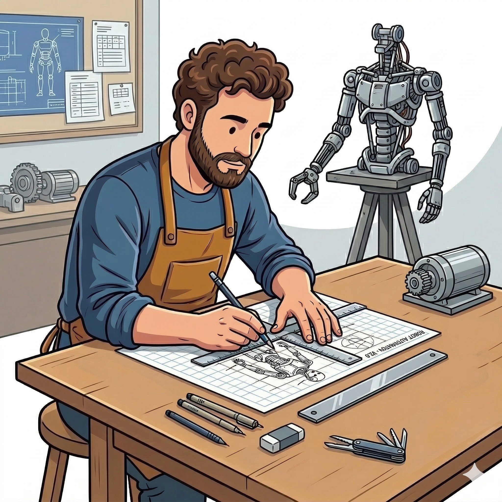

Mechanic uses Lean's sorry placeholder to isolate unresolved subgoals while preserving verified proof structure, resolving each failed subproblem in clean context.
Abstract
Recent advances in large language models (LLMs) and LLM-based agents have substantially improved the capabilities of automated theorem proving. However, for problems requiring complex mathematical reasoning, current systems rarely succeed on the first try and must repeatedly modify their proof strategies. Existing approaches for handling failed attempts typically either discard the entire proof and regenerate it from scratch or iteratively fix errors within the proof. The former is inefficient, as it may abandon mostly correct reasoning due to localized errors, while the latter, although preserving prior progress, leads to progressively longer contexts which progressively degrades the model's ability to attend to the remaining unresolved subproblems. To address this dilemma, we propose Mechanic, a novel agent system that employs a sorry-driven formal decomposition strategy. By leveraging the sorry placeholder in Lean to precisely isolate unresolved subgoals while preserving the surrounding verified proof structure, Mechanic extracts each failed subproblem into a clean, self-contained context and resolves it independently. This avoids both the waste of full regeneration and the excessive context length induced by repeated repairs. Experimental results on challenging mathematical competition benchmarks, including IMO 2025 and Putnam 2025, demonstrate that our agent achieves significant advantages in proving efficiency.
Problem
For hard mathematical competition problems, current theorem provers rarely succeed on the first try. Existing error-recovery approaches either discard the entire proof (wasting correct reasoning) or iteratively fix errors (causing excessively long contexts that degrade attention).
Approach
Mechanic uses a sorry-driven formal decomposition strategy. When a Lean proof contains errors, the system uses sorry placeholders to isolate unresolved subgoals while preserving the surrounding verified proof structure. Each failed subproblem is extracted into a clean, self-contained context and resolved independently. This avoids both full regeneration and excessive context growth from repeated repairs.
Figure 3: Example of the subgoal splitting workflow. The proof is first verified by Lean (red block, step 1), and the Sorrifier replaces erroneous parts with sorry placeholders. The goal state of each sorry position is extracted, then converted into new subtheorems (orange blocks, step 2). After a subtheorem is proved, it is integrated back into the original proof at the corresponding location usi

Figure 2: Workflow of Mechanic. (1) An informal solution is generated, verified and iteratively improved through a feedback loop. (2) The final informal solution is then translated into a formal proof, which is further revised based on Lean’s feedback. (3) If the proof continues to fail after several revisions, it is transformed into a sorried proof to extract subgoals. (4) Each resulting subgoal
Results
On Putnam 2025, Mechanic solves 11/12 problems with average time of 114 minutes per problem, compared to 196 minutes for Seed and 187 for Axiom. On IMO 2025, it solves 4/6 problems (P1, P3, P4, P5). The approach reduces time expenditure relative to baselines while achieving competitive or superior solve rates.
Problem
A1
A2
A3
A4
A5
A6
B1
B2
B3
B4
B5
B6
Avg
Seed
60
30
120
240
-
240
540
360
30
120
240
180
196
Mechanic
21
179
108
64
-
82
132
41
148
126
258
93
114
Per-problem time expenditure on Putnam 2025 (minutes)